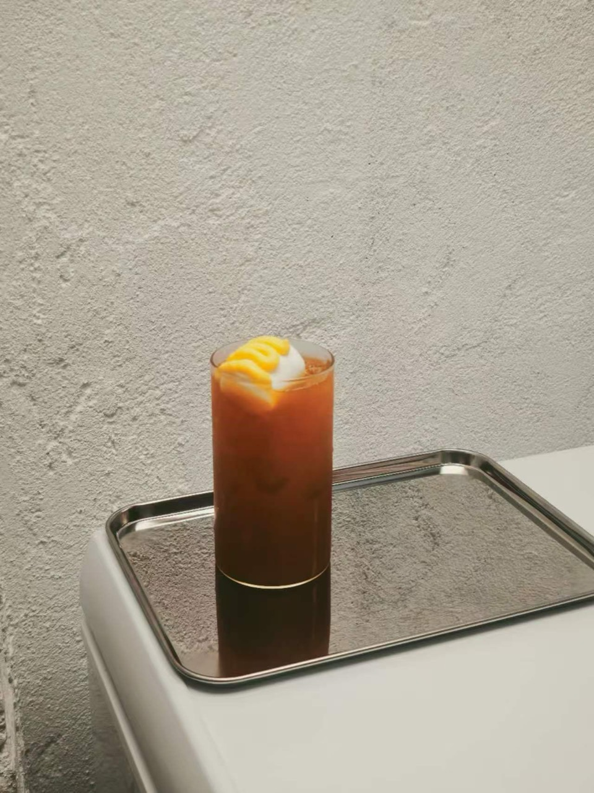
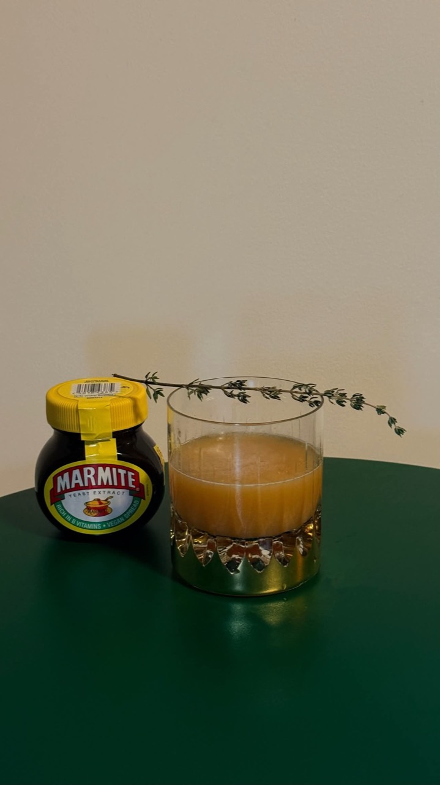
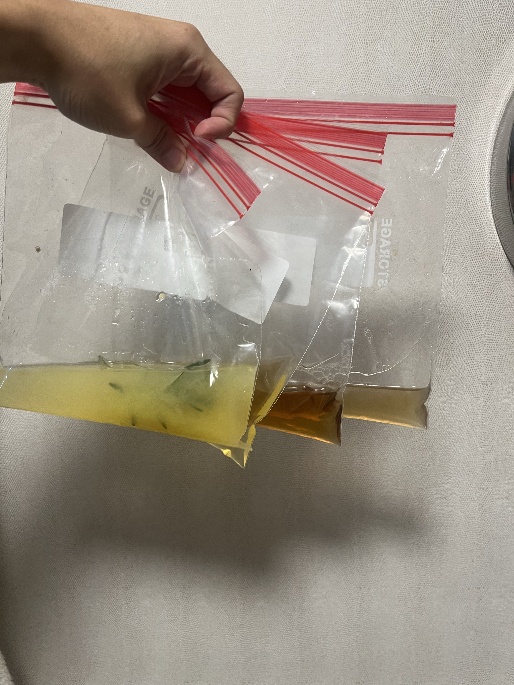
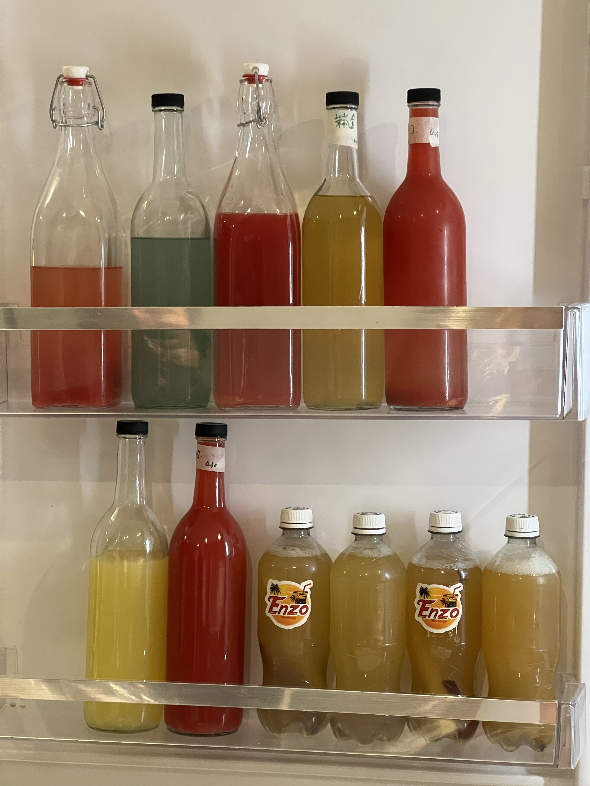
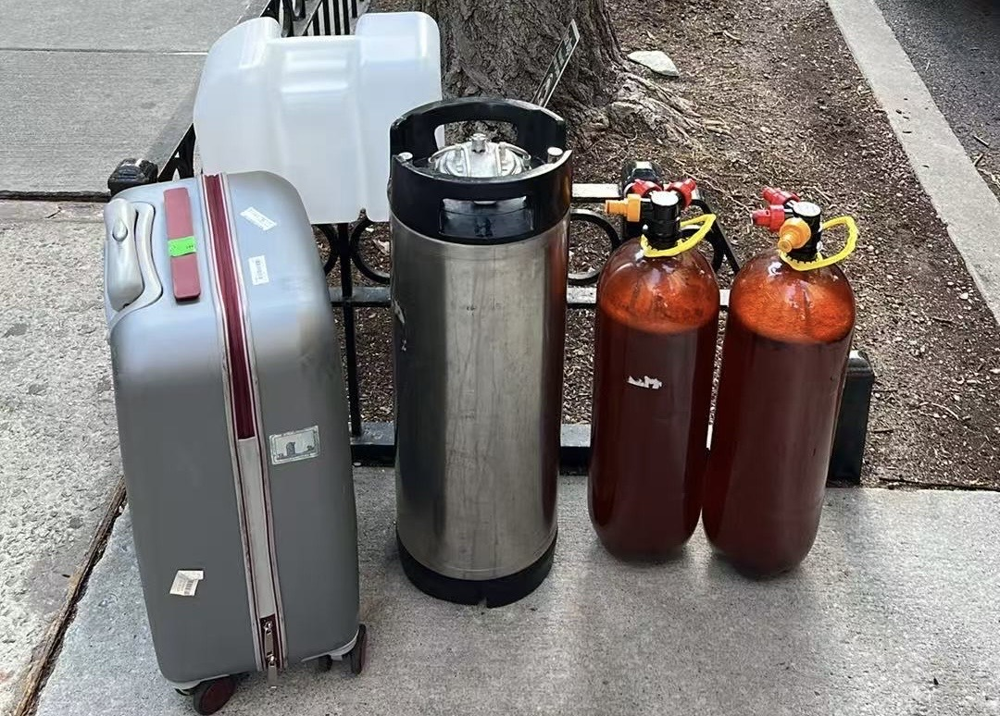

Enzo / A photographic journal
In good company.
In the making.
From the kitchen counter to a room full of guests.
Drinks, people, and the work that brings them together.
01 / Fruit Stand
As You Wish × WIP × Condesa
A fruit-stand theme, from preparation to the person across the counter. Business coordination, beverage R&D and bartending by Enzo. The original menu also carries Teapulse branding.

Across the counter
A moment of conversation during Fruit Stand service.

Attention to the details
Preparing drinks behind the Fruit Stand bar.

Ready to serve
A yellow drink with pineapple and a long green leaf, on an As You Wish napkin.

In motion
Shaking a drink against the fruit-illustrated event backdrop.

Fruit, color, texture
A yellow drink with a seasoned rim, beside a Condesa Gin bottle and fruit display.

Before the pour
Fruit Stand containers, fruit and service supplies at the event counter.

The seven-drink menu
Original menu artwork, carrying As You Wish, Teapulse and Condesa Gin marks.
02 / Midtown Live
Two drinks. One occasion.
THE BLANC · May 1, 2026. Business coordination, beverage R&D and bartending by Enzo.

Noiseless Nights / Jasmine 40th Street
The coral and blue pair for Midtown Live.

Midtown Live — May 1, 2026
Original project poster for THE BLANC, with the two drinks and their ingredients.
03 / Drinks
Color, texture, expression.
A selection of finished drinks and visual details from the practice.

Yellow, with a seasoned rim
A yellow drink on a TEAPULSE-lined tray.

A floral finish
An orange-red drink with a flower garnish.

Green study — side view
A yellow-green drink in a stemmed glass.


Tall glass, layered color
An orange drink with a pale topping.

Green study — detail
An overhead view of the yellow-green drink and its surface texture.

A darker expression
A dark drink photographed beside Malta Morena and Pitorro Café bottles.

A quiet shade of pink
A pale pink drink on a red tray.


Savory curiosity
An amber drink with an herb sprig, photographed beside Marmite.
04 / Process
The work behind the glass.
Ingredients, small preparations, working moments and the practical side of service.

At the kitchen counter
Preparing drinks with measuring jugs, bottles and a strainer.

Fruit, sugar, spice
Fruit pieces with sugar and a cinnamon stick during preparation.

Starting with ingredients
Fruit, dill, a rum bottle and filtering tools laid out on a counter.


Small samples
Several bags containing different liquid samples.

Side by side
Three bottles containing liquids and ingredient pieces.


A working collection
Bottled preparations on refrigerator shelves, including Enzo-labelled bottles.


Packed for service
A suitcase, beverage vessels and containers ready for transport.

Behind the bar
A working moment with a shaker at a warm, curved bar.

Hands-on preparation
Working with a long tool and a measuring jug at the kitchen counter.

Bottle and glass
An orange-yellow preparation and a serving glass on a green table.

Bread as a starting point
Toasted bread in a saucepan of liquid, beside a bottle of preparation.
05 / Visual notes
Covers, objects & ideas.
Tutorial artwork, presentation references and promotional design.

Piña Colada
Chinese-language tutorial cover artwork.

Orange / silver
A visual reference with an orange drink, a silver vessel and a cinematic setting. Image treatment is unconfirmed.

A spherical presentation
A transparent sphere with suspended white particles and a red figure; a presentation reference.

Lately Cafe LIC — generated artwork
Generated promotional artwork, retained as a design reference rather than documentation of an event.